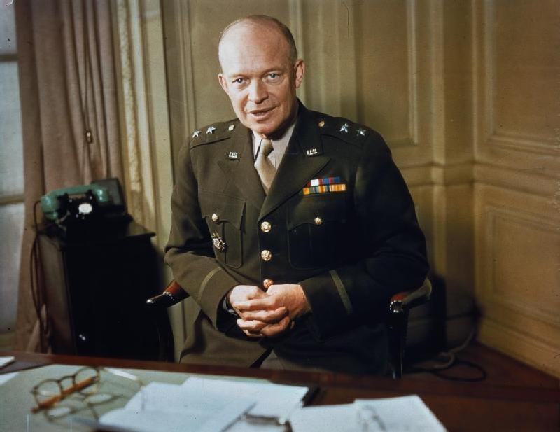
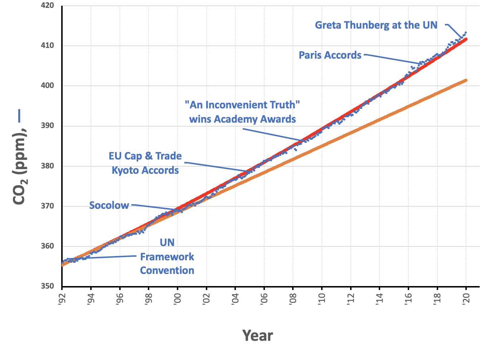
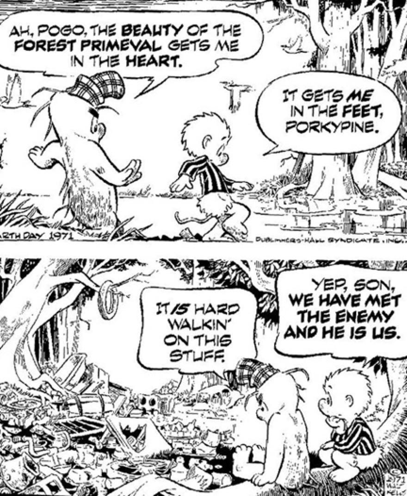

I’m Jonathan Burbaum, and this is Healing Earth with Technology: a weekly, Science-based, subscriber-supported serial. In this serial, I offer a peek behind the headlines of science, focusing (at least in the beginning) on climate change/global warming/decarbonization. I welcome comments, contributions, and discussions, particularly those that follow Deming’s caveat , “In God we trust. All others, bring data.” The subliminal objective is to open the scientific process to a broader audience so that readers can discover their own truth, not based on innuendo or ad hominem attributions but instead based on hard data and critical thought.
You can read Healing for free, and you can reach me directly by replying to this email. If someone forwarded you this email, they’re asking you to sign up. You can do that by clicking here .
Today’s read: 13 minutes.

“I tell this story [about the battle plans of the US Armed Forces before WWI] to illustrate the truth of the statement I heard long ago in the Army: Plans are worthless, but planning is everything. 1 There is a very great distinction because when you are planning for an emergency you must start with this one thing: The very definition of “emergency” is that it is unexpected, therefore it is not going to happen the way you are planning. … That is the reason it is so important to plan, to keep yourselves steeped in the character of the problem that you may one day be called upon to solve —or to help to solve. Now in the statements I have made, I don’t mean to say there are not some verities, some unchanging truths, although again, to quote a military man: The only unchanging factor in war is the most changeable, uncertain, unpredictable element in war, and that is human nature . 2 But the human nature of today is exactly what it was, apparently, in the time of Pericles and Alexander and down through the ages to this day. Everything else, even terrrain, even weather, seems to change.” President Dwight D. Eisenhower, in Remarks at the National Defense Executive Research Conference , November 14, 1957.
I chose to lead with this quote from the greatest military leader of the modern era because, apparently, some scientists believe that we’re at war with an enemy. For the record, I do not share this view, but there are some useful similarities. For example, scientists surely must be “steeped in the character of the problem”, and any would-be problem solver must take into account not only the technologies involved but also the uncertain (yet paradoxically unvarying) human element involved in implementing them.
The story continues…
We now understand what the problem is. Stated concisely:
-
The increase in carbon dioxide levels in the atmosphere, attributable to human extraction and combustion of geologic carbon over 350 years of industrialization, threatens to destabilize Earth’s climates.
If you disagree with this problem statement or don’t think we have a problem, please read the first installments!
To solve this problem, we need to figure out how humans can control the Earth’s atmosphere. Specifically, we need to adjust the amount of carbon dioxide it contains if we expect to maintain the planet’s temperature. Regardless of how you slice it, adjusting Earth’s “thermostat” will require “ geoengineering ”, in other words, an intentional process of applying human ingenuity (backed by Science). This is what the title of this series was originally meant to convey, “Healing the Earth with Technology.” Of course, technology is a necessary part of any solution, but it is far from sufficient. If you’re troubled by the consequences of such a globally impactful undertaking, consider the fact that we’ve already been doing it unintentionally for more than three centuries!
Let’s start with a reality check. There may be a few implicit yet unproven assertions that many of you may subscribe to, consciously or subconsciously:
-
Yet-to-be-developed technologies will lead to innovations that will enable humans to avoid a climate catastrophe,
-
The blame for climate change is borne by “others”, be they politicians, energy companies, countries of the developing world, countries of the developed world, etc. Consequently, “they” need to change, and
-
To the extent that “we” are to blame, acting as individuals at a local level will have an impact.
I believe that each of these assertions is false, and I will support my positions with data in forthcoming issues, so you may want to hold your fire. But here’s my summary: First, innovation (as opposed to invention) is a slow process, too slow to be effective in the timeframe needed. Second, whether they are countries or corporations, human organizations will inevitably circumvent agreements if it serves their self-interest regardless of the (planetary) common good. Finally, while individual choices can be enormously powerful, they are impossible to generalize and generally unavailable to the impoverished if there is a monetary cost involved.
I promised “data” in every issue, so, as another reality check, let’s look back at the motherlode of carbon dioxide data, from guru Dave Keeling, with an eye toward public actions that human society has already taken to “address” climate change.

The starting point of this chart is the year in which climate scientists broke onto the international scene. In 1992, the United Nations convened to choose a “framework” for addressing climate change. In other words, thirty years ago, the entire world got together and admitted, “We have a problem.” Europe, which represents about a third of the world’s economy, subsequently enacted an economic control strategy called “Cap & Trade”, a market-based strategy that had successfully reduced pollutants linked to acid rain in North America. The UN developed the “Kyoto Protocol” and “Paris Accords”, and notable social influencers like Al Gore and Greta Thunberg publicly urged us to “Act now, before it’s too late.” You can see the effect of these efforts in the chart! Nada.
The one 'event’ that needs further explanation is labeled “Socolow”. In a review article published in Science , titled “Stabilization Wedges: Solving the Climate Problem for the Next 50 Years with Current Technologies,” Princeton Professors Robert Socolow and Stephen Pacala wrote:
Humanity already possesses the fundamental scientific, technical, and industrial know-how to solve the carbon and climate problem for the next half-century. A portfolio of technologies now exists to meet the world’s energy needs over the next 50 years and limit atmospheric CO2 to a trajectory that avoids a doubling of the preindustrial concentration. Every element in this portfolio has passed beyond the laboratory bench and demonstration project; many are already implemented somewhere at full industrial scale. Although no element is a credible candidate for doing the entire job (or even half the job) by itself, the portfolio as a whole is large enough that not every element has to be used.
These are known in the trade as the “Socolow (or Stabilization) Wedges”, and this visualization led to the founding of the Carbon Mitigation Initiative at Princeton in 2000. It’s been 30 years since the world agreed that there is a problem and 20 years since academics told us that we have the tools to solve the problem! So, how are we doing? The data is clear:
We are not simply “falling short of our goals” or “not trying hard enough”. We haven’t even made a dent.
Neither international consensus nor a prescribed technological path has “bent the curve” (to borrow a COVID reference) of carbon emissions—that conclusion is evident from the primary data. [Your views may differ, but please bring data!] If either technology, international agreements, or free-market approaches were sufficient alone or in combination, we’d have seen at least a little change in direction, right? So, what can we do now?
The adage “If you don’t know where you’re going, then any road will do.” 3 may well apply to the first couple centuries of industrialization—when humans began to industrialize our way out of the Dark Ages, we didn’t even know what carbon dioxide was ! But the converse is also true: “Once you’ve figured out where you’re going, you’d better have a map and a plan, or you’ll never get there.” International agreements such as the Paris Accords (and the precedent Kyoto and Rio Accords) have set goals. Still, they have generally left it to individual “member states” to choose strategies for themselves. In my view, that’s a terrible idea: To paraphrase Adam Smith, it is not from the benevolence of the Americans, the Chinese, or the United Nations that we expect a climate solution, but from their regard to their own interest. 4 The goals of Paris are largely aspirational, and nations are incentivized to demonstrate ‘commitment’ to an ideal without having to feel the consequences of a failed strategy. Which path do YOU think politicians will choose?
Why is developing a realistic plan so difficult? Well, from a political perspective, it’s much easier to fix the blame than it is to fix the problem! What is true of individuals is also true of human governments. Climate change is generally couched as “someone else’s” problem, be it governments, companies, or individuals. But, of course, the truth is that it’s everyone’s problem. In the end, we should all want to avoid the pathetic role of the righteous pedestrian whose last words, yelled at the reckless bus driver, are “I have the right-of-way!” At this moment, we’re squarely in the path of the bus, we have no plan to avoid or divert it, and we cannot stop it. In fact, some appear to question the very existence of the bus, while others are sitting in the intersection arguing about precisely when it will hit us! At the same time, many leaders remain irrationally optimistic about science and technology as agents of rescue, either to avoid the crisis altogether or to put the world back together once it’s broken.
So, referring back to the opening Eisenhower quote, must we choose “War!” as the most extreme, radical form of political action? 5 Well, it is not an emergency…yet. I believe that approaching climate change from the viewpoint of armed conflict is counterproductive.
Consider this paragraph written by a “thought leader” in the field of climate change:
“The origins of the ongoing climate wars lie in disinformation campaigns waged decades ago, when the findings of science began to collide with the agendas of powerful vested interests. These campaigns were aimed at obscuring public understanding of the underlying science and discrediting the scientific message, often by attacking the messengers themselves—that is, the scientists whose work hinted that we might have a problem on our hands. Over the years, tactics were developed and refined by public relations agents employed to undermine facts and scientifically based warnings.” in The New Climate War , by Prof. Michael E. Mann (p. 9).
With all due respect to Professor Mann and his record, this is patently absurd and self-serving. First, wars don’t originate with disinformation, particularly when the facts are well known—the enemy here is simply those who disagree with the author’s conclusions! Applying the label “disinformation” is a convenient way to discount the opinions of those who disagree with you without acknowledging what might be legitimate points (if supported by data). As I have shown in previous installments, Science, at least around the topic of climate change, must remain uncertain until it is too late. Because of this, Mann’s “findings of science” should be described as “expert opinions”, the third (and potentially most damaging) version of false witness (after simple lies and damned lies). 6 Second, to solve a global problem, it’s ill-advised to pick a fight with ‘powerful vested interests.’ That makes it hard to win even a battle, much less a war, and in the unlikely event that the ‘war’ is won, what does victory look like? Do we expect every human on Earth to abandon all forms of carbon energy forever? [That’s >90% of the world’s energy supply today!] Finally, if victory means complete public understanding of the problem, frankly, we’re screwed. [See Eisenhower’s quote on the invariance of human nature in war.] That’s a difficult goal to achieve even among highly educated scientists who all seek Truth!
In this work, my objective is to enlighten enough decision-makers to the hard data and the conjecture that stems from it that leaders can make tough decisions with confidence. I am seeking to provide a sense of the “character of the problem that [they] may one day be called upon to solve.’ Regardless, I will, on occasion, choose imagery and language that evokes warfare, like “weapon” and “battle”. These words, while evocative, should not be taken literally. They describe a political situation where there is a true enemy, a conflict among ideologies, and a decisive victory (along with a surrender ceremony) determining which side has won and lost. To be clear, as immortalized by Walt Kelly’s Pogo comic strip (paraphrasing Admiral Perry and in specific reference to the first Earth Day), we are both the enemy and the victim.

At the base, human efforts can never fully vanquish the enemy because humans themselves are responsible. Instead, we must find a way to leverage human nature productively. If we don’t, then a “Climate War” will reach the same unfortunate fate as the “War on Drugs” and the “War on Poverty,” with much more serious consequences. Thus, it is far better to consider elevated carbon dioxide as a problem that humans can solve with technology rather than a problem caused by technology. Solving this problem must be an act of healing rather than an act of aggression. In this context, the weapons we choose must be neither offensive nor defensive. They must only be effective.
It’s now Sunday morning, and this installment hasn’t answered the leading question, “What can we do to control carbon dioxide levels in Earth’s atmosphere?” However, I think that it has at least pointed out that we need to make different choices than we have in the past. So, my simple answer to the question is, “Something different than we are doing now.”
Until next week…
Eisenhower, a student of military history, echoed the 19th century Chief of Staff of the Prussian Army, Helmuth von Moltke (the elder), who wrote “Kein Operationsplan reicht mit einiger Sicherheit über das erste Zusammentreffen mit der feindlichen Hauptmacht hinaus.” which reductively translates to “No battle plan survives contact with the enemy.”
I am not certain about the origin of this phrase, but I guess it originated in Carl von Clausewitz’s eight-volume treatise Vom Kriege (“On War”) , first published in 1837.
As is my custom, I try to trace quotes back to their origins. This one comes from Alice in Wonderland , by Lewis Carroll (1865), who wrote:
[Alice]“Would you tell me, please, which way I ought to go from here?”
“That depends a good deal on where you want to get to,” said the [Cheshire] Cat.
“I don’t much care where–” said Alice.
“Then it doesn’t matter which way you go,” said the Cat.
“–so long as I get SOMEWHERE,” Alice added as an explanation.
“Oh, you’re sure to do that,” said the Cat, “if you only walk long enough.”
Paraphrased from Adam Smith, “An Inquiry into the Nature and Causes of the Wealth of Nations” (1776) Chapter 2:
“It is not from the benevolence of the butcher, the brewer, or the baker that we expect our dinner, but from their regard to their own interest.”
Referring to Clausewitz’s most famous quote: “War is the continuation of politics by other means."
Referring to the previous installment, 2. Carbon. Hero or Villain? “A well-known lawyer, now a judge, once grouped witnesses into three classes; simple liars, damned liars, and experts. He did not mean that the expert uttered things which he knew to be untrue, but that by the emphasis which he laid on certain statements and by what has been defined as a highly cultivated faculty of evasion, the effect was actually worse than if he had.” Excerpted from an uncredited essay, “The Whole Duty of a Chemist” Nature 33 , pp 73-77 (1882). The piece was written on the occasion of the charter of the Royal Institute of Chemistry in London.